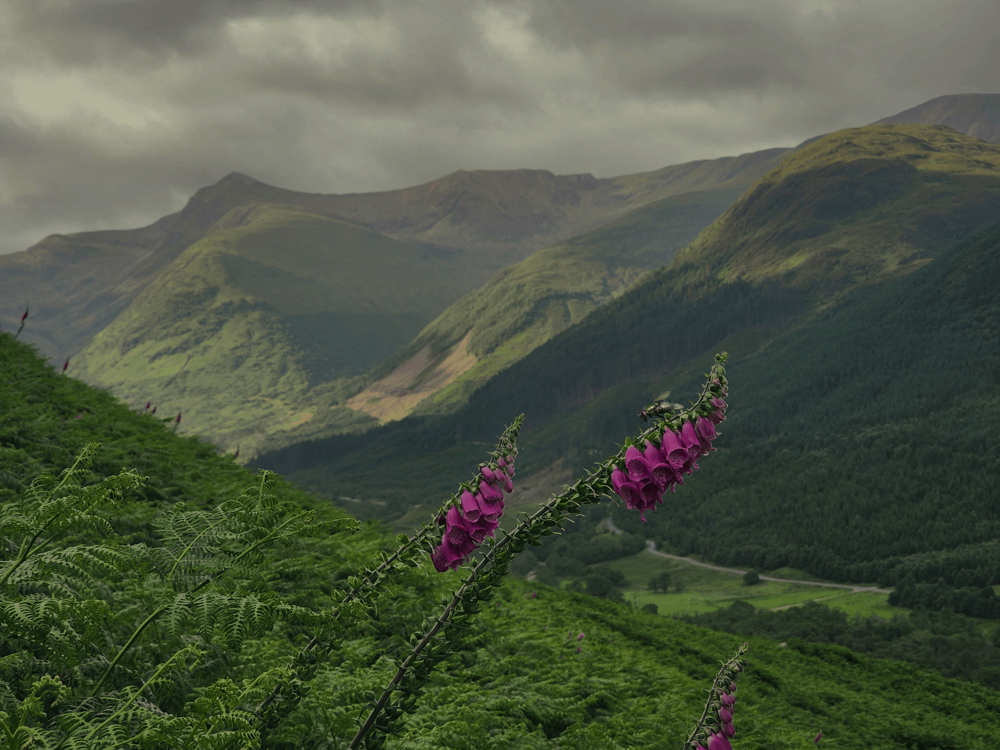
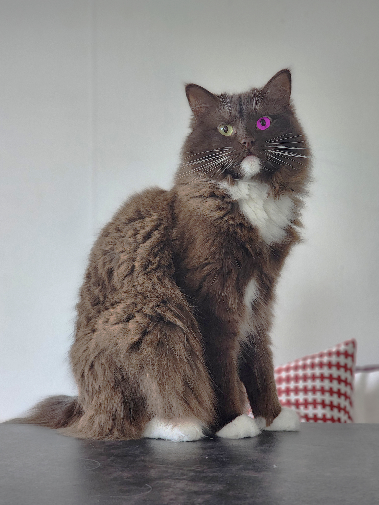
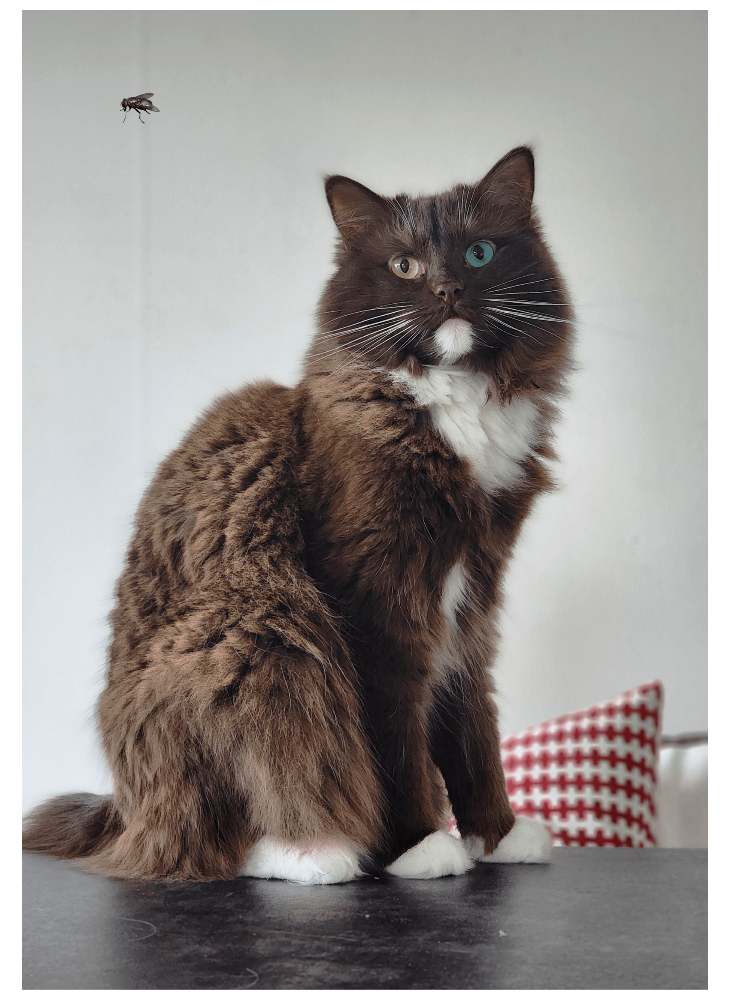

Mina bilder
Nedan kan ni se mina redigerade bilder bredvid dess orginalbilder. Alla bilder har redigerats i Photopea och exporterats till PNG format samtidigt som de komprimerats till mellan 75-80% för att få en lämplig filstorlek för webben utan att förlora för mycket kvalitet.


Originalbilden föreställer ett bergslandskap med gröna sluttningar och lila blommor i fokus. I den redigerade bilden har jag justerat expositionen, ljusstyrka, kontrast, mättnad och vitbalans. Detta för att bilden tidigade var relativt mörk och dämpad i färgerana. Jag har även frilagt en bild på en fluga och redigerat in i bilden, vilket är återkommande på resterande bilder.


Originalbilden visar en långhårig katt i brungrå päls med två olika färger på ögonen. I den redigerade bilden har jag ökat kontrasten och ändrat färg på ena kattens öga. I denna bild har jag även där redigerat in en frilagd fluga för att skapa en mer enhetlig bildserie.


Originalbilden visar en blomma med vita blad och rosa kanter och med en mindre insekt placerad på blomman. Bilden har en oskarp bakgrund av växtlighet. I den redigerade bilden har jag ökat ljusstyrka och kontrast samt tagit bort delar av bakgrunden längst ner av orginalbilden med hjälp av kloningsverktyget.